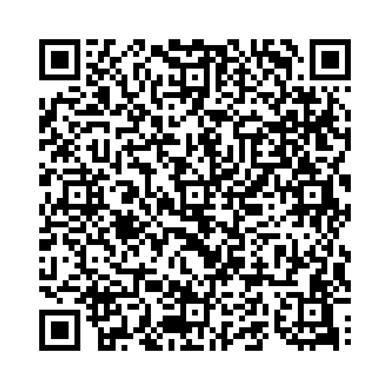

知覚動詞（see, hear, watch, feel, notice など）は、目的語と原形不定詞を使います。
以下の単語を並び替えて正しい文を作成しましょう。（和訳を参考にしてください）

問題1: (saw / the children / I / play / in the park) - 私は子どもたちが公園で遊ぶのを見た。
解答: I saw the children play in the park。
解説: 知覚動詞の後には「目的語 + 原形不定詞」を置きます。
問題2: (heard / I / the dog / bark / loudly) - 私は犬が大声で吠えるのを聞いた。
解答: I heard the dog bark loudly。
解説: 知覚動詞の後には「目的語 + 原形不定詞」を置きます。
問題3: (watched / I / her / dance / beautifully) - 私は彼女が美しく踊るのを見た。
解答: I watched her dance beautifully。
解説: 知覚動詞の後には「目的語 + 原形不定詞」を置きます。
問題4: (felt / I / the ground / shake / under my feet) - 私は地面が足元で揺れるのを感じた。
解答: I felt the ground shake under my feet。
解説: 知覚動詞の後には「目的語 + 原形不定詞」を置きます。
問題5: (noticed / a stranger / I / enter / the room) - 私は見知らぬ人が部屋に入るのに気づいた。
解答: I noticed a stranger enter the room。
解説: 知覚動詞の後には「目的語 + 原形不定詞」を置きます。